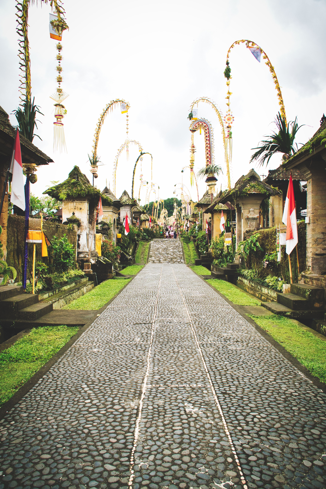

Tour Highlights
Places You Will Visit
A scenic route combining volcano views, lake landscapes, traditional village life, and local Balinese flavors.

Mount Batur Viewpoint
Enjoy breathtaking views of Bali’s famous volcano and surrounding highland landscape.

Lake Batur
A beautiful volcanic lake surrounded by mountains and peaceful Kintamani scenery.

Coffee Plantation
Discover Balinese coffee-making and enjoy a tasting experience with tropical views.

Tirta Empul Temple
A holy water temple known for traditional Balinese purification rituals.

Penglipuran Village
A traditional Balinese village famous for its clean layout, bamboo forest, and local culture.